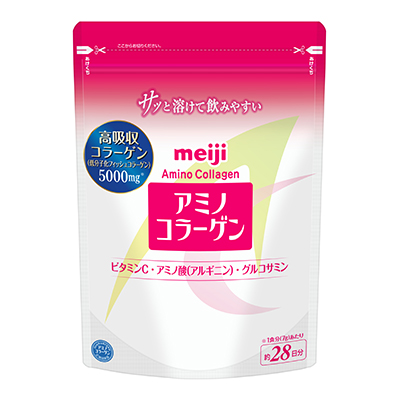

1 ・ 骨架基質原料
明治 胺基酸膠原蛋白
明治 アミノコラーゲン（缶 28日分／詰め替え用）
- 主色調
- 白底搭配粉紅色頂部的站立式補充袋（另有圓筒鐵罐款）
- 辨識關鍵字
- 「meiji」標誌與「Amino Collagen」，粉紅框內「アミノコラーゲン」大字，左側藍色圓章「高吸収コラーゲン 5000mg」，右下角「約28日分」
- 辨識圖樣
- 背景有淡黃與粉紅交疊的弧形圖樣；袋面標示「1 匙（7g）」的建議用量
購買數量：2 包官方 196g（約 28 日分）為上圖補充袋款；也可買 1 鐵罐裝 + 1 補充袋，合計 56 天份。鐵罐款外觀與此圖不同，請以品名「アミノコラーゲン」辨識